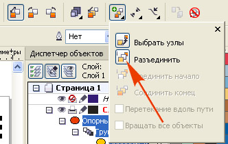
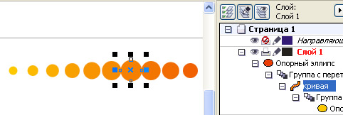

настройки перехода чтобы символ увеличивался к центру пути
J-11 / 20.04.2011, 14:47/00:41
Форум:
Подскажите пожалуйста как сделать настройки перехода чтобы символ увеличивался к центру пути
Подскажите пожалуйста как сделать настройки перехода чтобы символ увеличивался к центру пути
создайте переход между тремя объектами, большой символ в центре а меньшие по краям
На панели свойств найдите команду Разъединить

Курсор изменит вид на зигзагообразную стрелку. Щёлкните им по тому из объектов в перетекании, где будет изменение. Этот бъект выделится. Просто растягивайте его за маркеры.

Спасибо огромное,
мне тут тоже нарисовали туториал